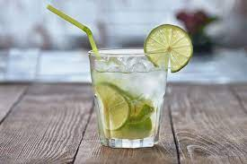

Caipirinha

Description
The Brazilian national cocktail is refreshing and delicous. Drink
responsibly.
Ingredients
- 1/2 lime, quartered
- 1 teaspoon white sugar
- 2 and 1/2 fluid ounces cachaça (Brazilian rum)
- 1 cup ice cubes
Steps
- Squeeze and drop lime wedges into a large rocks glass. Add sugar and
muddle until juices release.
- Pour in cachaça and ice. Stir well.